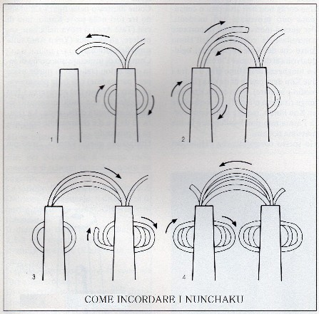

Un pò di Zen

La Verbena
* HABITAT =E' DIFFUSA OVUNQUE IN ITALIA FINO AI 1500 METRI
*PROPIETA' =ANTISPASMODICO, ASTRINGENTE FEBBRIFUGO, TONICO
*PARTI UTILIZZATE =PIANTA INTERA
*RACCOLTA =DURANTE LA FIORITURA
*CONSERVAZIONE =SI ESSICCA FACILMENTE IN QUALSIASI MODO
*USI =ESTERNI CATAPLASMA/INTERNO INFUSO
PER LENIRE IL DOLORE PROVOCATO DALLA LOMBAGINE APPLICATE UN CATAPLASMADI VERBENA. LE FOGLIE DI VERBENA POSSONO ESSERE APPENA BOLLITE E POI MESCOLATE AD UN BIANCO D'UOVO,OPPURE COTTE IN UN BICCHIERE D'ACETO. IN ENTRAMBI I CASI, IL COMPOSTO ANDRA MESSO TRA DUE PEZZUOLE ED APPLICATO PIU' CALDO POSSIBILE SULLA ZONA IN QUESTIONE.
ROSMARINO
* HABITAT =E' DIFFUSA OVUNQUE IN ITALIA FINO AI 1500 METRI
*PARTI UTILIZZATE =FIORI E RAMI
*RACCOLTA =I RAMI TUTTO L'ANNO E I FIORI IN PRIMAVERA
*CONSERVAZIONE=I RAMI SI FANNO ESSICCARE ALL'OMBRA E SI CONSERVANO APPESI AD UN FILO MENTRE I FIORI SI UTILIZZANO FRESCHI
*PROPRIETA'=ANTISETTICO, TONICO, STOMATICO, EMOLLIENTE ED AROMATICO
*USI =ESTERNO INFUSO DEI RAMETTI PER BAGNI E DOLORI RUMATICI/INTERNO INFUSO DEI RAMI
PER UN BAGNO STIMOLANTE METTERE RAMI INTERI IN IFUSIONE NELL'ACQUA DELLA VASCA, PER CURARE L'EMICRANIA LASCIARE VENTI GRAMMI DI SOMMITA' FIORITE E DI FOGLIE IN UN LITRO D'ACQUA BOLLENTE PER DIECI MINUTI E BERNE UNA TAZZA DOPODICHE' CORICARSI AL BUIO.
PEPERONCINO
*PROPRIETA'=STOMATICO APERITIVO STARNUTATORIO
*USO=INTERNO DECOTTI E TINTURA/ESTERNO INFUSI ED UNGUENTI CONTRO LE VESCICHE
PER COMBATTERE LA CADUTA DEI CAPELLI PUO' ESSERE UTILE PREPARARE UNA FRIZIONE LASCIANDO MACERARE PER DIECI GIORNI QUINDICI GRAMMI IN ALCOL. IL PREPERATO DEVE ESSERE POI FILTRATOE APPLICATO DIRETTAMENTE SUL CUOIO CAPELLUTO FINO AD ASSORBIMENTO.
PRISCILLA PYANEE PRPY7603 A PRESTO
Il sistema a tre corde è autobloccante e di facile manutenzione.
Il Maestro Davide Piccolo